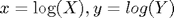
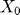
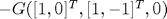
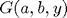

cf2gaby
Returns conditional expectations given a charcteristic function. Part of the CFH Toolbox.
Syntax
C = CF2GABY(CF,A,B,Y) C = CF2GABY(CF,A,B,Y,AUX) [C Y] = CF2GABY(CF,A,B) [C Y] = CF2GABY(CF,A,B,[],AUX)
Given a disocunted characteristic function cf, CF2GABY returns the conditional expectation:
Input Arguments
CF is a discounted characteristic function. A, B are (NX)x(1) parameters, Y is a scalar.
AUX is a structure containing optional parameters for the Fourier transform.
- aux.N denotes the number of points for FRFT evaluation, default 8192
- aux.u0 is the lower limit of integration of the characteristic function, default 1e-8
- aux.uMax is the upper limit of integration of the characteristic function, default 200
- aux.x0 contains the log of spot underlying, default zero
- aux.quad If you want to use numerical quadrature methods instead of FFT methods, set aux.quad='true' or aux.quad=1, default off.
Contents
Example 1: Black-Scholes option pricing model
One (inefficient) way to obtain the option price for a given strike level is by employing the conditional expectation function.
S0 = 100;
x0 = log(S0);
rf = 0.05;
tau = 1;
sigma = 0.25;
cf = @(u) exp(-rf*tau+i.*u.*x0+i.*u.*tau*(rf-1/2*sigma^2)-1/2*u.^2*sigma^2);
K = 105;
%
cf2gaby(cf,1,-1,-log(K)) - K*cf2gaby(cf,0,-1,-log(K))
ans =
10.002
Compare the result using this function with a direct application of the Fast Fourier Transform:
cf2call(cf,struct('x0',x0,'K',K))
ans =
10.002
Example 2: Chooser option (from DPS2000)
Assume that we want to price an option whose payoff is the maximum of two assets and , . The log assets have the dynamics:
Assuming some parameters, we obtain the coefficients:
tau = 1; X0 = 100; Y0 = 110; rf = 0.05; sX = 0.20; sY = 0.25; rhoX = 0.70; rhoY = 0.30; COV = sX*sY*(rhoX*rhoY + sqrt(1-rhoX^2)*sqrt(1-rhoY^2)); K0 = rf - 1/2*[sX^2 ; sY^2]; H0 = [sX^2 COV ; COV sY^2]; R0 = rf; x0 = log([X0 ; Y0]);
Foreknowing that we will apply the function <cf2gaby.html cf2gaby shortly, we have to make sure that the characteristic function should take an (NX)x(K) input and return an output W of dimension (1)x(K):
cf = @(u) cfaffine(u,x0,tau,K0,[],H0,[],R0,[],[],[],[],1);
We can test this by asking for the discount factor and the risk-neutral expected asset levels:
u0 = [0 1 0 ;
0 0 1];
cf(-i*u0)
ans =
0.95123 100 110
We will now write the payoff in a more comprehensible form and price its components. Let :
We can compute each component using the function cf2gaby which takes the discounted characteristic function as an input and computes expectations of the type
where the vector denotes the state variables. We find that the first summand is just the risk-neutral expectation of . If there are no dividends present, this is , else we would have to compute cf(-i*[1;0]). The second summand is . The last part is .
Combining these, we obtain
cf(-i*[1;0]) + cf2gaby(cf,[0;1],[1;-1],0) - cf2gaby(cf,[1;0],[1;-1],0)
ans =
111.4
As a check, we perform the exact same analysis, starting at asset :
cf(-i*[0;1]) + cf2gaby(cf,[1;0],[-1;1],0) - cf2gaby(cf,[0;1],[-1;1],0)
ans =
111.4
which yields the same result.
Example 3: Bond option pricing
In this example, we will follow the approach of (DPS2000) to bond option pricing.
Assume a call option with maturity written on a zero coupon bond with maturity at time . Thus, at point in time , the bond has remaining life  .
.
At this point in time, depending upon the value(s) of the state variable(s), the bond will have the risk-neutral price
(See cf2bond for more examples on bond pricing)
A call option with strike written on the zero bond pays
We can thus apply the function  to bond option pricing:
where we have have abbreviated the state dependent discount factor integral as , and where and . We can thus rewrite the expression once more and obtain:
Using the function , these expressions can be evaluated as:
Let us apply this framework to price bond options written on two different underlying processes, the Vasicek short rate model and the Cox-Ingersoll-Ross short rate model.
- Vasicek
- Cox-Ingersoll-Ross
We will set the model variances such that their long run variances equal.
r0 = 0.01; kR = 0.45; tR = 0.05;
Let us assume in the Vasicek model:
sV = 0.04;
...resulting in a long run variance level of
lvV = sV^2/(2*kR)
lvV =
0.0017778
we match the CIR variance so that it meets Vasicek's long run variance:
sC = sqrt(lvV*2*kR/tR); lvC = tR*sC^2/(2*kR);
quickly check the equality:
[lvV lvC]
ans =
0.0017778 0.0017778
Just to make sure, we test the Feller condition on the CIR process (implying )
[2*kR*tR sC^2]
ans =
0.045 0.032
We assume that the call option matures in years, whereas the bond matures in =5 years. Thus, the remaining life at maturity is years.
tau1 = 2; tau2 = 3;
The relevant factos and can be recovered from the characteristic function function cfaffine, which we will employ throughout this example. Note that the only 'difference' between the model specifications is that the CIR model has a state dependent variance:
cfVas = @(u,tau) cfaffine(u,r0,tau,kR*tR,-kR,sV^2,[],[],1); cfCIR = @(u,tau) cfaffine(u,r0,tau,kR*tR,-kR,[],sC^2,[],1);
For both models, we compute the values of and to
[~,aV,bV] = cfVas(0,tau2) [~,aC,bC] = cfCIR(0,tau2)
aV =
-0.064753
bV =
-1.6461
aC =
-0.066817
bC =
-1.6066
Let us quickly compare hypothetical 3-year zero bond prices that start starting 2 years from now for several levels of possible future shor trates:
rr = [0:0.01:0.15]; bondV = exp(aV+bV*rr); bondC = exp(aC+bC*rr); plot(rr,bondV,'k',rr,bondC,'r') title('hypothetical prices induced by Vasicek and CIR model given r_T'); xlabel('future spot rate r_T'); ylabel('future zero bond price'); legend('Vasicek','CIR');
We can now compute and compare bond option prices across different strikes for both models. Let us consider the log strike space:
x = linspace(log(0.75),log(1.10),40)'; X = exp(x);
As the log grid is equally spaced, we can now implement the FFT approach:
kV = exp(aV);
CV = kV*cf2gaby(@(u) cfVas(u,tau1),bV,-bV,-x+aV) ...
- X.*cf2gaby(@(u) cfVas(u,tau1),0,-bV,-x+aV);
When computing CIR bond option prices, note that the CIR characteristic function converges only slowly, thus we have to consider a larger range of integration MAX in cf2gaby:
kC = exp(aC); aux.uMax = 1500; aux.N = 2^15; CC = kC*cf2gaby(@(u) cfCIR(u,tau1),bC,-bC,-x+aC,aux) ... - X.*cf2gaby(@(u) cfCIR(u,tau1),0,-bC,-x+aC,aux); plot(X,CV,'b',X,CC,'r',X([1 end]),[0 0],'k'); title('Bond option prices from Vasicek and CIR model'); legend('Vasicek','CIR'); xlabel('Strike level'); ylabel('Bond option price'); ylim([0 max(CV)]);
From this plot, we can clearly see that the CIR model yields zero call option prices for strikes above 1, as it does not allow for negative interest rates, unlike the Vasicek model.